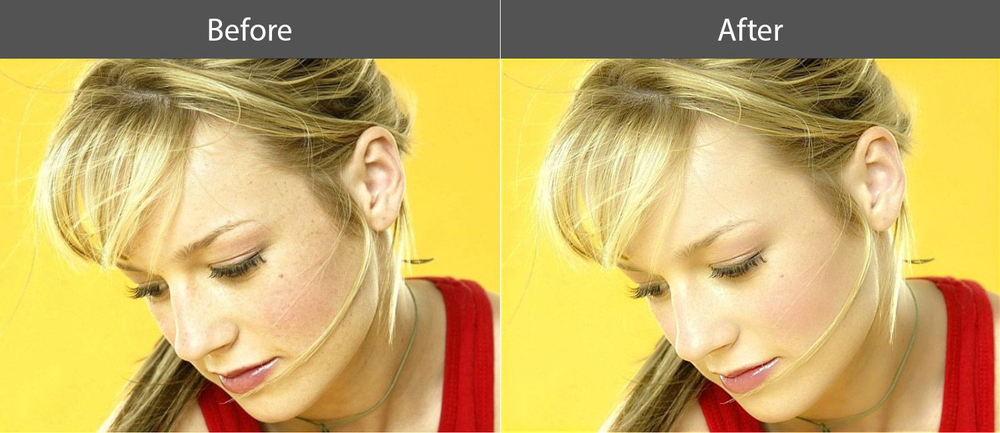
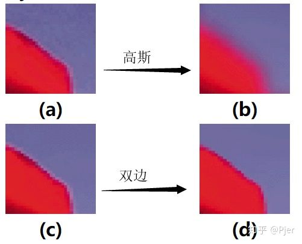
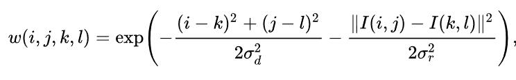
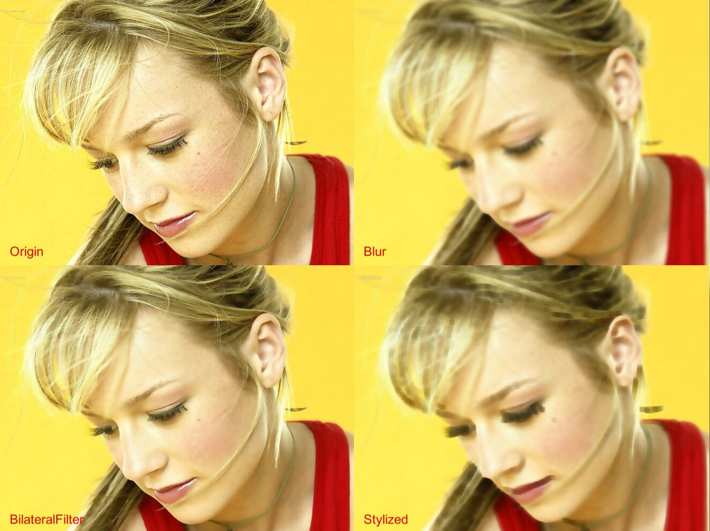

知乎上看到一篇风格化图像处理的文章，尝试在Unity里实现下
原文链接 QT/C++实现卡通漫画风格化
效果为磨皮加描边，描边将在未来的文章里介绍
本篇只介绍磨皮算法
参考效果

双边滤波
常见的磨皮算法一般使用双边滤波，对皮肤的部分进行模糊，即对非边缘进行模糊
双边滤波采用基于高斯分布的加权平均的方法，同时考虑了像素距离和像素值的差异
使得双边滤波在降噪的同时能保留原有边缘
一些基础概念：双边滤波器

公式
k和l是当前像素的索引，i和j是图片上任意一点的像素索引，w 为权重
转化一下 kl 为采样 uv 的当前偏移，ij 就是 uv

在Unity中实现
核心代码1
2
3
4
5
6
7
8
9
10
11
12
13
14
15
16
17
18
19
20
21
22
23
24
25
26
27
28
29
30
31
32
33
34float3 BilateralFilter(float2 uv)
{
float d = _Radius;
float ss2 = 2 * _SigmaSpace * _SigmaSpace;
float sc2 = 2 * _SigmaColor * _SigmaColor;
float i = uv.x;
float j = uv.y;
float weightSum = 0;
float3 filterValue = 0;
float3 centerCol= tex2D(_MainTex, uv).rgb;
for (int k = -d; k <= d; k++)
{
for (int l = -d; l <= d; l++)
{
float2 curUV =uv+ _MainTex_TexelSize.xy*float2( k,l);
float3 curCol = tex2D(_MainTex, curUV);
float value_Square = dot(curCol - centerCol, curCol - centerCol);
float distance_Square = distance(curUV, uv)*d;
float weight = exp(-1 * (distance_Square / ss2 + value_Square / sc2));
weightSum += weight;
filterValue += (weight * curCol);
}
}
filterValue =filterValue / weightSum;
return filterValue;
}
最终效果
通过对权重公式的修改，可以很容易的实现原本想要的卡通的笔触

参考资料
QT/C++实现卡通漫画风格化
三行MATLAB实现动漫风格照片
【图像处理】——双边滤波
Unity Shader 实现磨皮效果
YUCIHighPassSkinSmoothing